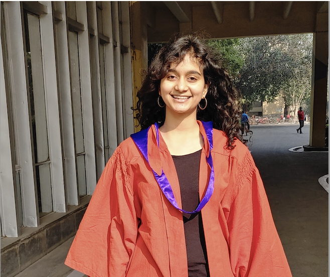

|
Varuni Sarwal
I am a final year Computer Science PhD student at Zarlab, UCLA 🎓. Prior to this, I spent 4 wonderful years at the Indian Institute of Technology, Delhi (IIT Delhi) studying Biochemical Engineering and Biotechnology 🧬 and Computer Science 💻. During my undergrad, I was fortunate to have worked with Professor Frank Doyle (Harvard SEAS) and Professor Eleazar Eskin (UCLA) 👨🏫. I'm really excited about ML models, and more recently Large Language Models (LLMs) in the healthcare and genetics space 🤖! Seeing algorithms I've developed help identify high-risk patients is something that really motivates me 💡.
I am on the job market (2025) and looking for industrial research positions. Do not hesitate to reach out to me if you think I am a good fit!
Email /
CV /
Google Scholar /
LinkedIn
|

|
|
Research
I am driven by uncovering insights from complex data, with a specific focus on genetics and healthcare during my PhD.
Each summer, I make it a point to engage in cross-domain ML applications, which has led me to explore fields like options trading at Belvedere and instructional finetuning for supply chain optimization at Amazon Research.
My research is driven by the goal of leveraging advanced machine learning techniques to bridge the gap between theory and practical applications, ultimately improving real-world outcomes in healthcare and beyond.
|
|
|
BioinformaticsBench: A collaboratively built large language model benchmark for Bioinformatics reasoning[PAPER][POSTER]
Varuni Sarwal, Seungmo Lee, Rosemary He, Aingela Kattapuram, Eleazar Eskin, Wei Wang, Serghei Mangul
ICML, 2024
Created BioinformaticsBench, which is to date the largest benchmark set containing
602 human annotated questions across 9 different bioinformatics domains.
|
|
|
VISTA: an integrated framework for structural variant discovery[TALK][POSTER]
Varuni Sarwal, Seungmo Lee, Jianzhi Yang, Sriram Sankararaman, Mark Chaisson, Eleazar Eskin, Serghei Mangul
ASHG, RECOMB, 2023
Created Variant Identification and Structural Variant Analysis (VISTA), a consensus based structural variant caller that identifies SV events with high accuracy and beats SOTA.
|
|
|
Prediction of perinatal depression using EHR-derived phenotypes [TALK]
Varuni Sarwal, Aditya Pimplaskar, Jeffery Chiang, Loes Olde Loohuis
Amazon Sciencehub, 2023
Leveraged the power of clinical electronic health record data and machine learning methods to make accurate predictions of perinatal depression, defined as a depressive illness occurring during pregnancy or following
childbirth
|
A comprehensive list of publications can be found on Google Scholar
Talks and Posters
- UCLA Sciencehub Showcase, Fall 2024
- Invited talk, Ashoka University, India, Summer 2024
- International Conference on Machine Learning (ICML), Summer 2024
- Intelligent Systems for Molecular Biology (ISMB), Summer 2024
- UCLA Computer Science Seminar, ScienceHub Fellowship, Spring 2023]
- Research in Computational Molecular Biology (RECOMB), Spring 2023, 2022, 2021
- American Society of Human Genetics (ASHG), Fall 2022, 2021
- Rocky Conference, ISCB, Fall 2022, 2021
- Australian Bioinformatics And Computational Biology Society (ABACBS), Fall 2020]
- Bioinformatics Open Source Conference (BOSC), Fall 2020
- International Diabetes Congress (ATTD), Summer 2020
- Bruins in Genomics Summer Institute, UCLA, Summer 2018
|
Awards
- Winner, UCLA Anderson Innovation Challenge, GenAI track, 2024
- Amazon Fellow, Science Hub for Humanity and AI, 2023
- Jane Street Graduate Research Fellowship - Exceptional Contribution, 2023
- UCLA Grad Slam Semi-Finalist, 2023
- UCLA Departmental Fellowship (2020-22)
- IIT Delhi Department Rank #2 (2016-20)
- Best Poster Award, Bruins In Genomics Summer Program UCLA, 2018
- Charpak Scholar, Embassy of France (1 of 13 students nationwide), 2018
- Bronze medalist, International Genetically Engineered Machine at MIT, 2018
- Design Innovation Summer Award, Ministry of Human Resource and Development, India (2017)
- Kishore Vaigyanik Protsahan Yojana (KVPY, 0.01% nationwide) (2015)
- National Talent Search Exam Scholar (NTSE, 0.05% nationwide) (2014)
|
Extracurricular activities and service
- Founder, UCLA Graduate Ski and Snowboard Club (100+ members and counting!)
- Founder and CEO, Philanthromatch, a GenAI powered charity-donor matching platform
- Board Member: UCLA Graduate Women in Computer Science (2021-22)
- Reviewer: ISMB (2024,2022), RECOMB (2022), ISBRA (2021), ICML: Accbio (2024), DMLR (2024)
|
|
{kind=link}